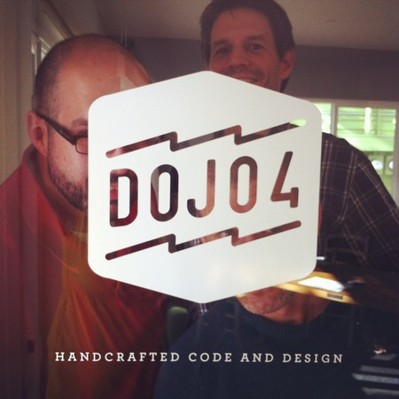
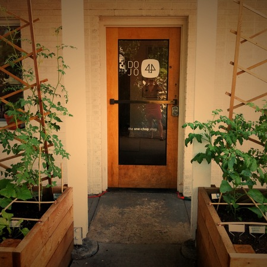

Sometimes the day comes when it's time for a change. Today was one of those days, and the change came in the form of a new logo on our front door.

There's been a lot of fresh mountain water under the bridge since the day back in early 2010 when dojo4 co-founder, Jeffrey Larrimore (of tear-away pants and @okayjeffrey fame) did his magic, designed the original dojo4 logo and put it on the door of our burgeoning new little business. That logo is the brand that got us known around town and beyond, and has made us recognizable as the one-chop shop that "will send ninjas." It's the elegant and iconographic logo that brought us more than our fair share of fun and success. And it's what people have seen for the past two and a half years every time they walk happily through our door.

The decision to change the logo is a reflection of the ongoing growth and metamorphosis of dojo4 and the people that comprise it. It's a reflection of the agility that is our necessary approach to manifesting a resilient company culture and durable client services. It reflects the playful vision we have for engaging rewardingly with the world around us.
Indeed, we've found that it's possible to thrive on change, rather than be thrashed by it, and that in order to do so requires being unsentimental and the ability to murder our darlings. It requires that we ride change rather than be ridden by it. It requires always being willing to try something new and always being willing to know ourselves better.
So we thank you very much, Jeffrey, for coining the seminal dojo4 brand and are looking forward to seeing what this new one brings us- and the one after that, and the one after that...
Also: look for our new site, to be launched soon.
[The ever adroit and bewhiskered Jeffrey Larrimore (jeffreylarrimore.com)]